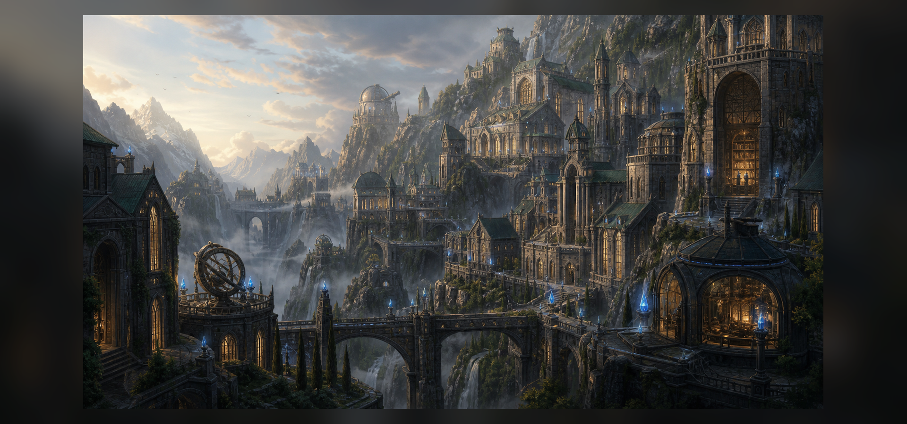

Возраст
Миру больше 3000 лет. Последние две тысячи лет известны по хроникам, а более древняя история растворяется в легендах, руинах и спорных преданиях.
01 / Картина мира
Миру больше 3000 лет. Последние две тысячи лет известны по хроникам, а более древняя история растворяется в легендах, руинах и спорных преданиях.
Магическая руда изменила экономику, войны, медицину и саму идею власти. У кого больше магов и запасов руды, тот диктует условия.
Мир красивый, но тревожный. В нем есть свадьбы, ярмарки и песни в тавернах, но все понимают: новая война может начаться внезапно.
02 / Политика



03 / Древний язык
Кхарак - древнейший известный язык мира. На нем говорила цивилизация орков до загадочного исчезновения более двух тысяч лет назад.
Сегодня язык считается мертвым: полностью им не владеет никто. Отдельные корни сохранились в названиях государств, городов, рек, хребтов и руин.
04 / Магия
Мана не восстанавливается сама. Каждое применение магии расходует запас, а вернуть его можно только очищенной рудой или ее производными.
Слабые проявления после контакта с рудой.
Основа военной силы; около тысячи на крупную державу.
Легендарные фигуры; обычно не больше десяти на державу.
05 / История
Исчезнувшая цивилизация первой открыла добычу и обработку магической руды. От нее остались технологии, строения, язык Кхарак и слишком много вопросов.
Державы, дома, картели и малые страны начали фиксировать войны, торговлю, союзы и первые научные школы.
Эксперименты с жизненной эссенцией исказили тела людей. Многие зараженные были изгнаны в Мертвые земли или сброшены в Великое море.
06 / Земли
Сложный рельеф делает вторжение дорогим и опасным.
Опасная граница между Велтиром и Маркором, полная морских чудовищ.
Часто владеют шахтами и становятся полем чужих войн.
07 / Народы
Самая многочисленная раса. Живут около 70-90 лет и правят Велтиром.
Редки, живут около 200 лет, особенно сильны в науке и обработке руды.
Живут около 120 лет, славятся оружейным делом и любовью к огнестрельному оружию.
Исчезнувшая цивилизация, оставившая руины, Кхарак и технологии добычи руды.
Молодая раса изгнанников Великой эпидемии. Их тела частично кристаллизуются, но большинство сохраняет память, личность и разум.
Открыть статью08 / Вера
Религия в мире слаба, кроме Велтира, где культ магии используется как идеологический инструмент. В Маркоре верят во что угодно, пока это не мешает сделке. В Элидоре религию вытесняет наука.
09 / Быт
Основа быта напоминает средневековье: книги пишут вручную, дороги опасны, власть часто держится на земле и людях. При этом уже известны порох, компасы, развитое кораблестроение и рудные технологии, унаследованные от орков.
10 / Слухи
Ходят слухи, что одну из держав интересует не только добыча, но и производство руды. Официально это невозможно.
Многие зараженные сохранили разум. Они были изгнаны, потеряли семьи и теперь мечтают вернуться в мир живых.
Современные ученые восстановили лишь часть языка. Остальные слова могут скрывать историю орков и происхождение магической руды.